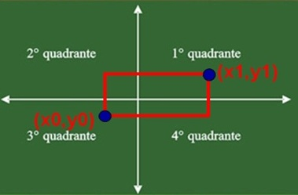

Retângulo
Desenvolva uma função que verifique se um determinado ponto
(xp,yp) está localizado dentro ou fora de um retângulo.
O retângulo é definido por seus vértices inferior esquerdo
(x0,y0) está localizado dentro ou fora de um retângulo.
O retângulo é definido por seus vértices inferior esquerdo
(x0,y0) e superior direito (x1,y1).
A função deve ter como valor de retorno 1, se o ponto
estiver dentro do retângulo, e 0 caso contrário.
É obrigatório a utilização do protótipo abaixo:
int dentro_ret(int x0, int y0, int x1, int y1, int xp, int yp);

Código
#include <stdio.h>
#include <stdlib.h>
int verifica_ret(int x0, int y0, int x1, int y1) {
//verifica reta
if (x0 == x1 || y0 == y1) {
printf("Isto e uma reta.");
return 1;
}
//verifica quadrado
else {
int dist1, dist2;
if (x0 > x1) {
dist1 = x0 - x1;
} else {
dist1 = x1 - x0;
}
if (y0 > y1) {
dist2 = y0 - y1;
} else {
dist2 = y1 - y0;
}
if (dist1 == dist2) {
printf("Isto e um quadrado.");
return 1;
}
}
printf("Ok! Isto e um retangulo.\n");
return 0;
}
int dentro_ret(int x0, int y0, int x1, int y1, int xp, int yp) {
int controlex = 0, controley = 0;
//verifica x
if ((xp < x0 && xp > x1) || (xp < x1 && xp > x0)) {
controlex = 1;
}
//verifica y
if ((yp < y0 && yp > y1) || (yp < y1 && yp > y0)) {
controley = 1;
}
if (controlex == 1 && controley == 1) {
return 1;
} else
return 0;
}
int verifica_linha(int x0, int y0, int x1, int y1, int xp, int yp) {
int linha = 0;
if (xp == x0 || xp == x1) {
if ((yp < y0 && yp > y1) || (yp < y1 && yp > y0) || (yp == y0 || yp
== y1)) {
linha = 1;
}
} else if (yp == y0 || yp == y1) {
if ((xp < x0 && xp > x1) || (xp < x1 && xp > x0) || (xp == x0 || xp
== x1)) {
linha = 1;
}
}
if (linha == 1) {
return 1;
} else
return 0;
}
int main(void) {
setbuf(stdout, NULL);
int x0, y0, x1, y1, xp, yp;
printf("** RETANGULO **\n\n");
printf("Digite as coordenadas de um ponto (x0,y0) ");
fflush(stdin);
scanf("%d%d", &x0, &y0);
printf("Digite as coordenadas de outro ponto (x1,y1) ");
fflush(stdin);
scanf("%d%d", &x1, &y1);
if (verifica_ret(x0, y0, x1, y1) == 0) {
printf("Digite o ponto que voce deseja saber se esta dentro ou fora do retangulo ");
fflush(stdin);
scanf("%d%d", &xp, &yp);
if (dentro_ret(x0, y0, x1, y1, xp, yp) == 1) {
if (xp == (x0 + x1) / 2 && yp == (y0 + y1) / 2) {
printf("Este ponto esta no centro do retangulo!");
} else
printf("Este ponto esta dentro do retangulo!");
} else {
if (verifica_linha(x0, y0, x1, y1, xp, yp) == 1) {
printf("Este ponto esta em cima da linha do retangulo!");
} else
printf("Este ponto esta fora do retangulo!");
}
}
return 0;
}